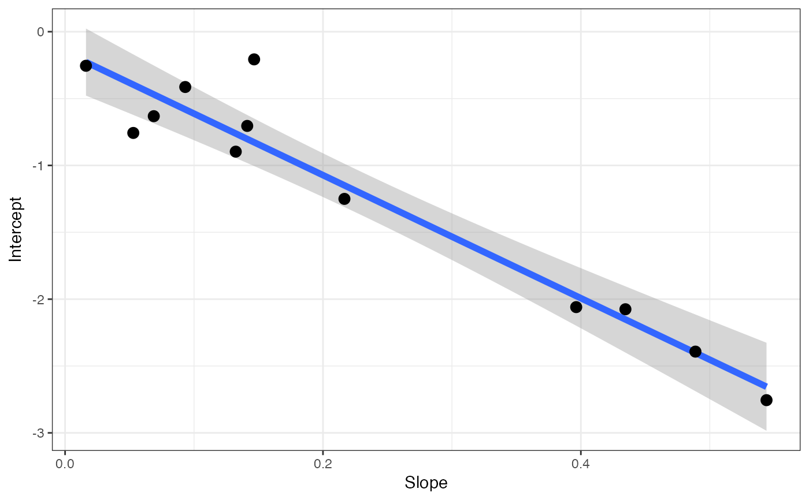

Estimating light respiration
fit_r_light_kok(
data,
varnames = list(A_net = "A_net", PPFD = "PPFD"),
PPFD_lower = 40,
PPFD_upper = 100
)
fit_r_light_WalkerOrt(
data,
varnames = list(A_net = "A_net", C_i = "C_i", PPFD = "PPFD"),
P = 100,
C_i_threshold = 300
)
fit_r_light_yin(
data,
varnames = list(A_net = "A_net", PPFD = "PPFD", phi_PSII = "phi_PSII"),
PPFD_lower = 40,
PPFD_upper = 100
)Dataframe
List of variable names
Lower light intensity limit for estimating Rlight (Kok & Yin)
Upper light intensity limit for estimating Rlight (Kok & Yin)
Atmospheric pressure in kPa (Walker & Ort, 2015)
Threshold C_i (in umol mol-1) to cut data to linear region for fitting light respiration and gamma_star (Walker & Ort, 2015)
fit_r_light_kok estimates light respiration using the Kok method (Kok, 1956). The Kok method involves looking for a breakpoint in the light response of net CO2 assimilation at very low light intensities and extrapolating from data above the breakpoint to estimate light respiration as the y-intercept. r_light value should be negative, denoting an efflux of CO2.
fit_r_light_WalkerOrt estimates light respiration and GammaStar according to Walk & Ort (2015) using a slope- intercept regression method to find the intercept of multiple ACi curves run at multiple light intensities. Output GammaStar and respiration should be negative If output respiration is positive this could indicate issues (i.e. leaks) in the gas exchange measurements. GammaStar is output in umol mol-1, and respiration is output in umol m-2 s-1 of respiratory flux. Output is a list containing the slope intercept regression model, a graph of the fit, and estimates of the coefficients. NOTE: if using C_i, the output value is technically C_istar. You need to use Cc to get GammaStar. Also note, however, that the convention in the field is to completely ignore this note.
fit_r_light_yin estimates light respiration according to the Yin et al. (2009, 2011) modifications of the Kok method. The modification uses fluorescence data to get a better estimate of light respiration. Note that respiration output should be negative here to denote an efflux of CO2.
Kok B. 1956. On the inhibition of photosynthesis by intense light. Biochimica et Biophysica Acta 21: 234–244
Walker BJ, Ort DR. 2015. Improved method for measuring the apparent CO2 photocompensation point resolves the impact of multiple internal conductances to CO2 to net gas exchange. Plant Cell Environ 38:2462- 2474
Yin X, Struik PC, Romero P, Harbinson J, Evers JB, van der Putten PEL, Vos J. 2009. Using combined measurements of gas exchange and chlorophyll fluorescence to estimate parameters of a biochemical C3 photosynthesis model: a critical appraisal and a new integrated approach applied to leaves in a wheat (Triticum aestivum) canopy. Plant Cell Environ 32:448-464
Yin X, Sun Z, Struik PC, Gu J. 2011. Evaluating a new method to estimate the rate of leaf respiration in the light by analysis of combined gas exchange and chlorophyll fluorescence measurements. Journal of Experimental Botany 62: 3489–3499
# \donttest{
# FITTING KOK METHOD
# Read in your data
# Note that this data is coming from data supplied by the package
# hence the complicated argument in read.csv()
# This dataset is a CO2 by light response curve for a single sunflower
data <- read.csv(system.file("extdata", "A_Ci_Q_data_1.csv",
package = "photosynthesis"
))
# Fit light respiration with Kok method
r_light <- fit_r_light_kok(
data = data,
varnames = list(
A_net = "A",
PPFD = "Qin"
),
PPFD_lower = 20,
PPFD_upper = 150
)
# Return r_light
r_light
#> (Intercept)
#> -0.5237011
# FITTING WALKER-ORT METHOD
# Read in your data
# Note that this data is coming from data supplied by the package
# hence the complicated argument in read.csv()
# This dataset is a CO2 by light response curve for a single sunflower
data <- read.csv(system.file("extdata", "A_Ci_Q_data_1.csv",
package = "photosynthesis"
))
# Fit the Walker-Ort method for GammaStar and light respiration
walker_ort <- fit_r_light_WalkerOrt(data,
varnames = list(
A_net = "A",
C_i = "Ci",
PPFD = "Qin"
)
)
# Extract model
summary(walker_ort[[1]])
#>
#> Call:
#> lm(formula = Intercept ~ Slope, data = coefs)
#>
#> Residuals:
#> Min 1Q Median 3Q Max
#> -0.36114 -0.10958 -0.05553 0.08166 0.62016
#>
#> Coefficients:
#> Estimate Std. Error t value Pr(>|t|)
#> (Intercept) -0.1526 0.1176 -1.297 0.224
#> Slope -4.6004 0.4069 -11.307 5.1e-07 ***
#> ---
#> Signif. codes: 0 ‘***’ 0.001 ‘**’ 0.01 ‘*’ 0.05 ‘.’ 0.1 ‘ ’ 1
#>
#> Residual standard error: 0.2513 on 10 degrees of freedom
#> Multiple R-squared: 0.9275, Adjusted R-squared: 0.9202
#> F-statistic: 127.8 on 1 and 10 DF, p-value: 5.103e-07
#>
# View graph
walker_ort[[2]]
#> `geom_smooth()` using formula = 'y ~ x'

# View coefficients
walker_ort[[3]]
#> GammaStar r_light
#> Slope 46.00427 -0.152643
# FITTING THE YIN METHOD
# Read in your data
# Note that this data is coming from data supplied by the package
# hence the complicated argument in read.csv()
# This dataset is a CO2 by light response curve for a single sunflower
data <- read.csv(system.file("extdata", "A_Ci_Q_data_1.csv",
package = "photosynthesis"
))
# Fit light respiration with Yin method
r_light <- fit_r_light_yin(
data = data,
varnames = list(
A_net = "A",
PPFD = "Qin",
phi_PSII = "PhiPS2"
),
PPFD_lower = 20,
PPFD_upper = 250
)
# }